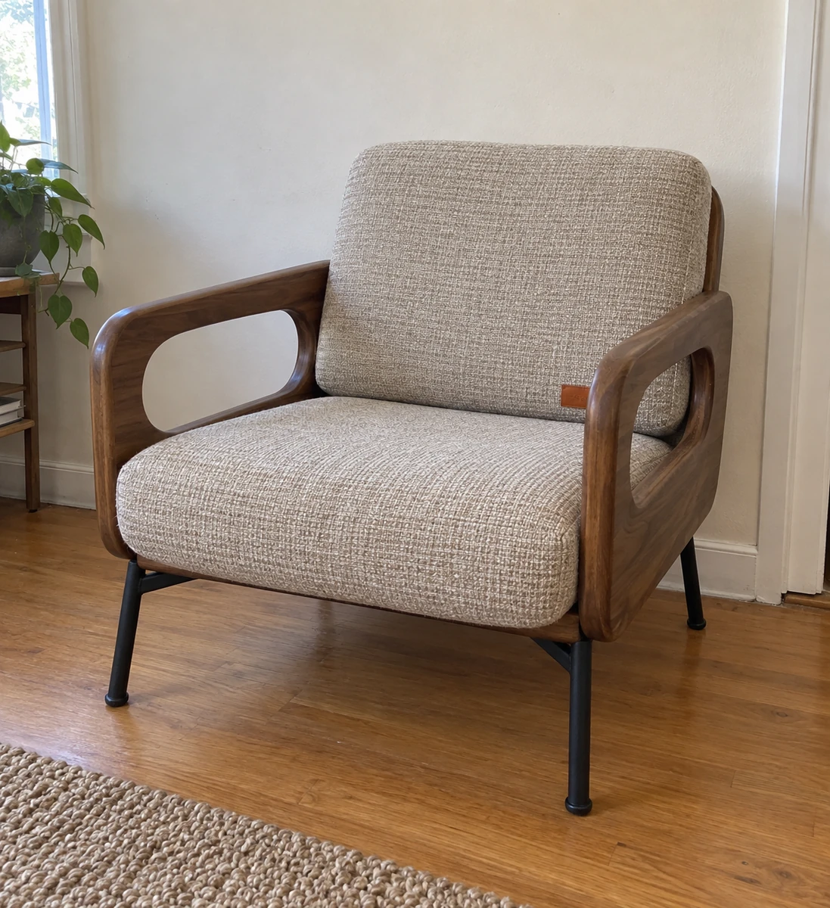
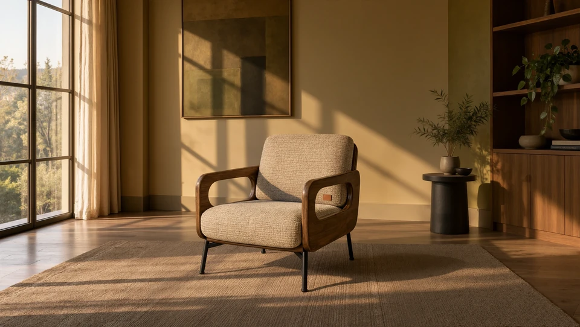
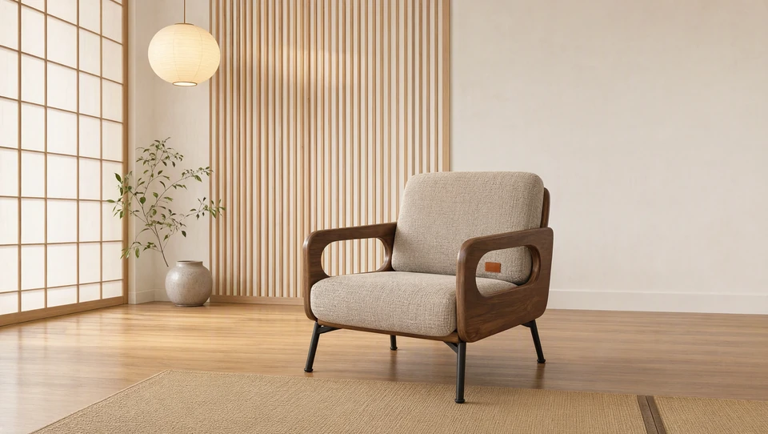
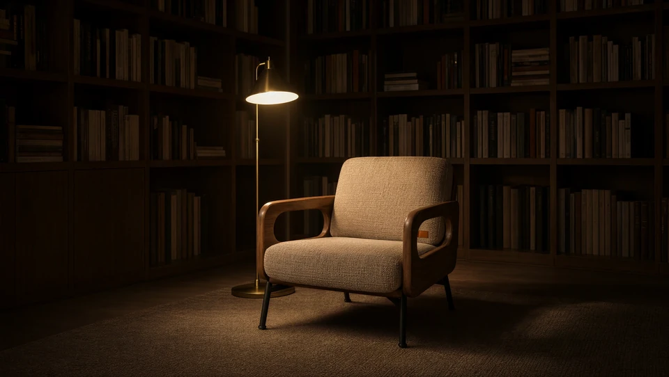
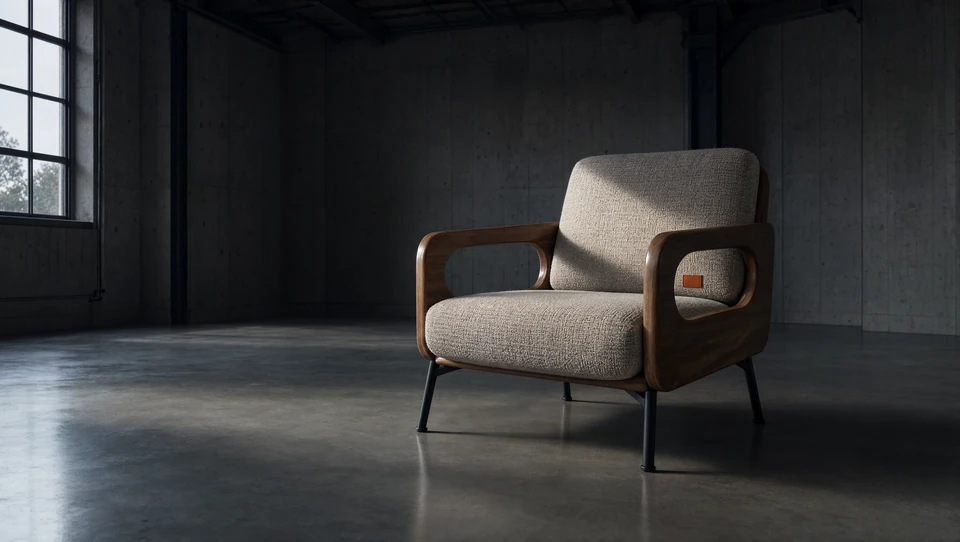

Furniture / interiors
Self-initiated portfolio workOne walnut lounge chair, considered in different spaces.
I created a set of images for one walnut lounge chair across a hotel lounge, a Japandi room, a library nook and an industrial interior. A studio presentation adds a product-focused view to the series.

Brief and use
The product reference anchors a series of room contexts. The images give furniture and interior brands a starting point for lifestyle and product-led campaign directions.




A repeatable image series
For a client project, we agree on the product references, intended channel, visual direction and image count. I create the scene variations, share them at the agreed review points and check product details against the source. After approval, I prepare the final files in the required formats. This workflow supports regular production and larger image batches.
Discuss product and interiors imagery ↗